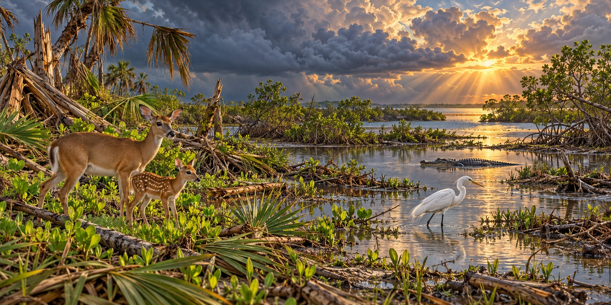

What Hurricanes Do to Florida’s Wildlife
The Good, the Bad, and the Ugly, According to 300 Scientific Studies

A toad earned its nickname from the disaster that threatens to drown it. Florida’s Eastern spadefoot, a small amphibian that spends most of its life buried underground, is known among biologists as the “hurricane toad.” When heavy hurricane rain fills the temporary wetlands it breeds in, the spadefoot emerges in a synchronized burst and breeds in pools that, for a brief window, hold none of the large fish that would eat its eggs.
Three Hundred Studies, One Honest Answer
A University of Florida-led review published in Biological Reviews examined more than 300 scholarly articles about tropical cyclones and wildlife. Hance Ellington, its senior author, described varied effects on survival, reproduction and movement. The review covered species worldwide, so an example from another region should not be presented as a Florida observation.
This is not a story with a single moral. It is several stories, true at once, about different kinds of animals.
Fawns After Georges
The UF summary describes increased fawn numbers among Key deer after Hurricane Georges in 1998, linked to new plant growth. It also discusses blue-footed boobies in their own range, not as a Florida species. A local increase after one storm does not mean every population benefits from hurricanes.
The Butterfly on the Edge
The same review names real losses. The Miami blue butterfly, once found throughout South Florida’s coastal hammocks, has been pushed to the brink of extinction in significant part by tropical cyclones repeatedly striking its limited habitat. The Cozumel thrasher, a bird, faces an even worse outlook. For the Miami blue there is cautious hope: a breeding program at the Florida Museum of Natural History is working to rebuild the population, a human intervention aimed at a threat natural recovery cannot reliably overcome.
Drowned by Salt, Not by Wind
Not all storm deaths come from wind. The review documents American alligator deaths caused by saltwater storm surge flooding into freshwater habitat. An animal untouched by the storm’s physical force can still die from its secondary, chemical effect on habitat, days or weeks after the wind has passed.
A Dolphin That Shrugged, a Dolphin That Struggled
Studies of dolphins in different estuaries have found different outcomes. Some populations showed no lasting change after a storm, while others experienced changes in calf survival or reproduction. Habitat, food supply and the population being studied affect the result; adaptability does not establish that a species is safe from future disturbance.
Animals That Feel the Storm Before It Arrives
Research has documented sharks changing their movements as storms approach. The signals and responses vary among species and studies. Tracking data can reveal movement, but they do not justify treating all animals as dependable hurricane forecasters.
Quick Facts
| The study | University of Florida review, Biological Reviews; 300+ articles |
|---|---|
| Lead researcher | Hance Ellington, UF/IFAS; senior author of the review |
| Winner | Key deer: more fawns after Hurricane Georges (1998) |
| “Hurricane toad” | Eastern spadefoot; breeds en masse in rain-filled temporary wetlands |
| Loser | Miami blue butterfly; breeding program at the Florida Museum of Natural History |
| Indirect threat | Saltwater surge into freshwater habitat has killed alligators |
| Dolphins | No lasting impact after Charley; higher calf mortality after Katrina |
| Invasive species | Storms can help spread invasive animals into new areas |
Did You Know?
A toad is nicknamed for the hurricanes that trigger its breeding.
Key deer had more fawns after Hurricane Georges.
Sharks move to deeper water before a storm arrives.
Vocabulary
Tropical cyclone: the general term for hurricanes, typhoons and similar storms.
Plasticity: a species’ ability to adjust its behavior to changing conditions.
Storm surge: seawater pushed onto land by a storm’s winds.
Discussion Questions
1. Why can the same hurricane help one species and harm another?
2. What does the alligator example show about “indirect” storm damage?
Related Articles
FLH-0008 — Hurricane Charley (2004)
FLH-0020 — How Florida Pioneers Predicted Storms
FLH-0041 — Birds Before the Storm
FLH-0042 — The Everglades After a Hurricane
Sources
University of Florida News. “Midwest Flamingos and ‘Hurricane Toads’: Wildlife’s Strange Storm Stories.” news.ufl.edu
Wild Dolphin Project. “How Hurricanes Impact Wildlife.” wilddolphinproject.org